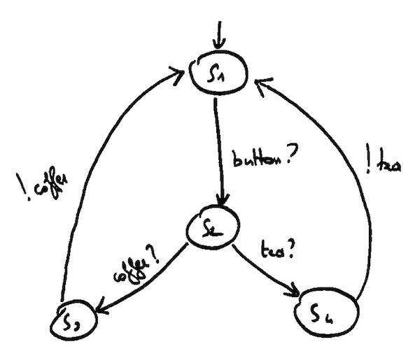

Once Upon A Time In Software Testing
William Durand - October 24, 2013How to select subset of test cases from all possible test cases with a high chance of detecting most faults?
Example

$$ L = (S, Act, \rightarrow) $$
with
$$ S = \lbrace s_{1}, s_{2}, s_{3}, s_{4} \rbrace $$
and
$$ Act = \lbrace COFFEE, TEA, BUTTON \rbrace $$
Example
$$
\begin{align}
traces(s_{3}) =
& \lbrace \epsilon, \\
& BUTTON, \\
& BUTTON \cdot TEA \cdot BUTTON, \\
& \dots \rbrace = traces(s_{1}) = traces(s_{4}) \\
\\
traces(s_{2}) =
& \lbrace \epsilon, \\
& TEA, \\
& COFFEE, \\
& TEA \cdot BUTTON \cdot TEA, \\
& \dots \rbrace
\end{align}
$$
ε is the empty word, part of Act, an Alphabet.
Input/Output LTS
By partitioning the actions labels ($$ Act $$) into inputs ($$ Act_{I} $$)
and outputs ($$ Act_{U} $$), we can obtain an IOLTS:
$$ Act = Act_{I} \cup Act_{U} $$
The names of input actions end on "$$ ? $$", and
those of output actions with "$$ ! $$".
We introduce a special action δ to denote quiescence.
Example

$$
\begin{align}
Act_{I} = & \lbrace COIN?, COFFEE?, TEA? \rbrace \\
Act_{U} = & \lbrace COFFEE!, TEA! \rbrace
\end{align}
$$
Context (1/2)
Michelin relies on the Computer Integrated Manufacturing
(CIM) approach to control the entire production:
- L4: Business Software
- L3: Virtual level as it is not that used (Factory Management)
- L2: Supervision / Workshop Management
- L1: Automata
These levels can exchange data among them.